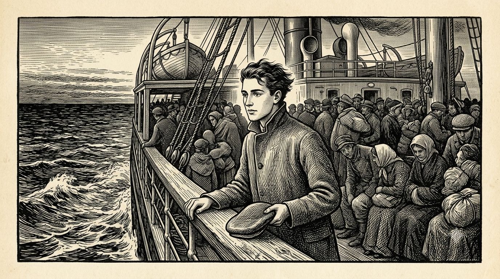
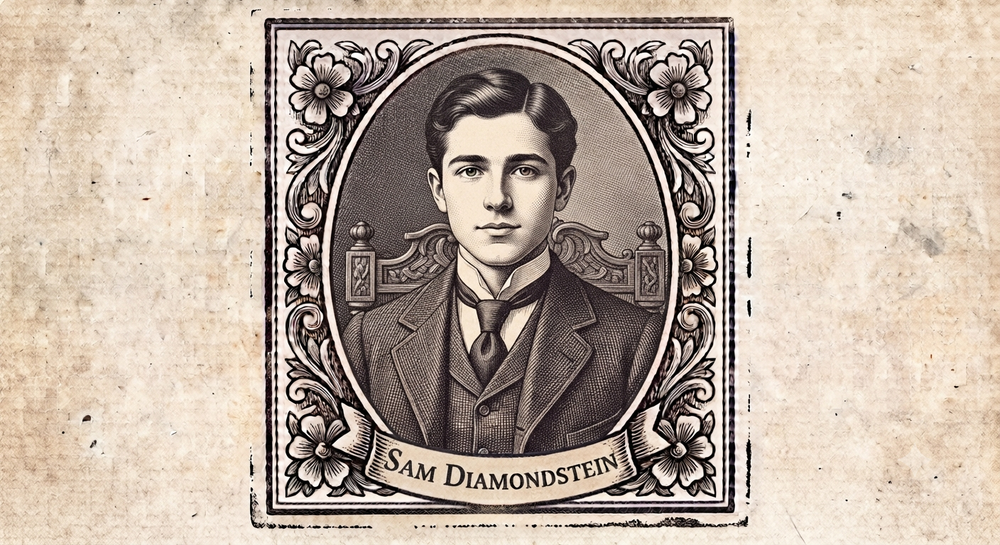
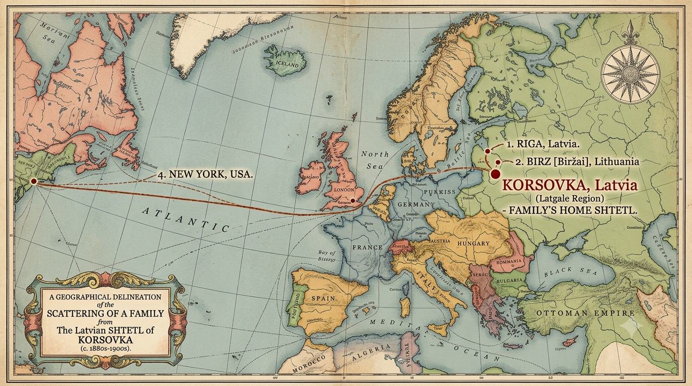
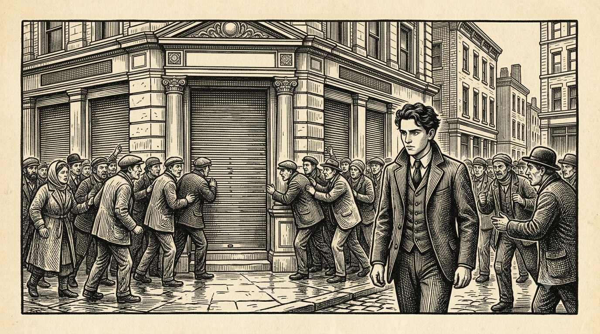
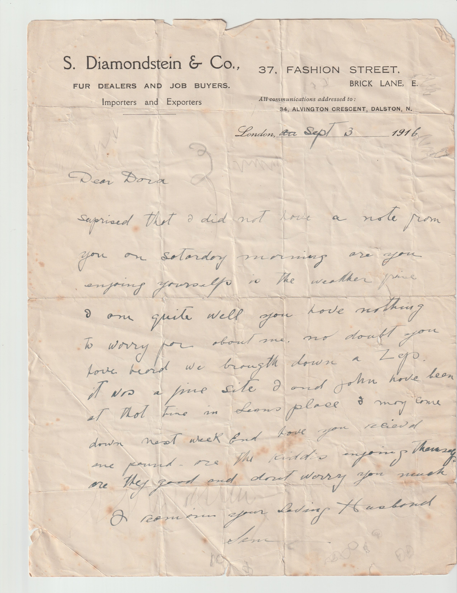
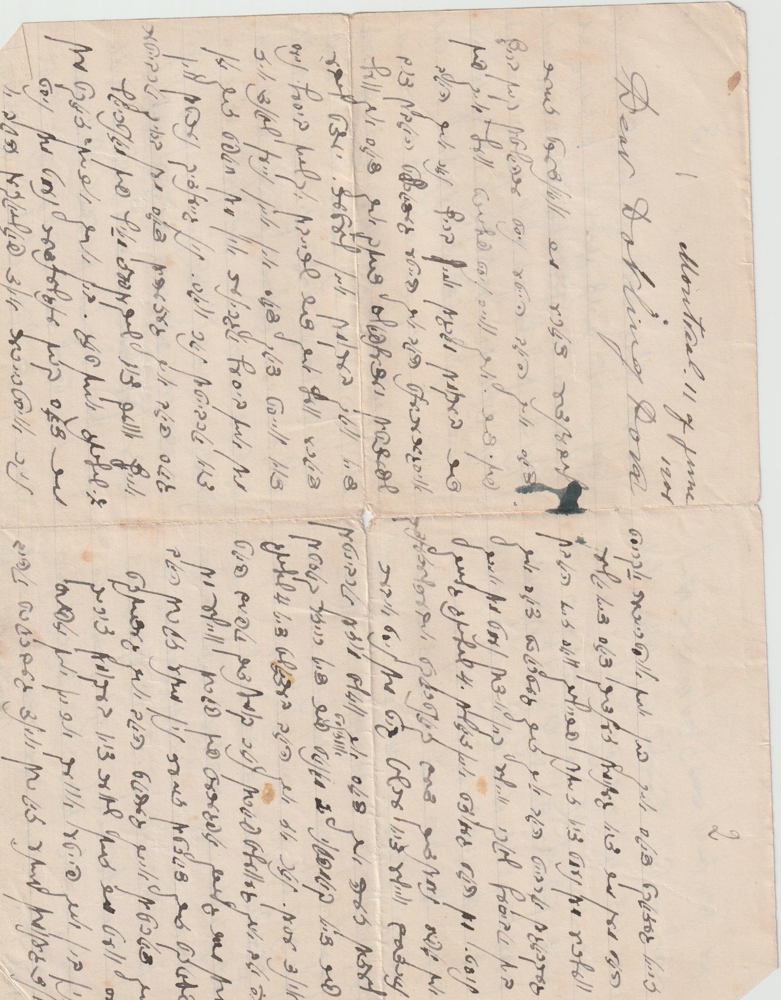

There's no one right way through this. Pick a door — each one gives you a different amount of the story, at a different pace.

Start here · ~30 min
Read the Story: Complete Version
The whole arc, every detail — six chapters, book-style with a cover and back page, letters linked inline.
6 chapters, cover to back cover

Shorter version · ~10 min
Read the Story: Condensed Version
The same story, condensed — five chapters, with the maps, portraits, and illustrations woven in exactly where they belong, not off in their own section.
All 5 chapters built out below

Browse
The Story in Pictures
23 illustrated scenes, if you'd rather see it than read it.
A visual retelling

Browse
Meet the Family
Sam, Dora, and everyone else who appears in the letters — click anyone for their story.
13 people

~5 min
Follow the Journey
Every place this family went, on a map — each one explained, not just shown.
5 maps + timeline

Worth knowing first · ~3 min
Explainers
Worth knowing before the letters make full sense — why Yiddish, why letters worked like texting, the Pale of Settlement, cousin marriage, and more.
12 short explainers + glossary

Just for fun
Random Quotes
Pick a theme — love, money, the children, waiting for the post — and see a real line pulled from the letters.
127 quotes, 8 themes

Browse
Every Letter
Letters and postcards, translated and transcribed, sorted by era.
81 of 141, in this wireframe

An AI research experiment
How This Was Made
No one left in the family reads Yiddish well enough to check this alone — this is a real experiment in whether AI can do genealogical research honestly, and exactly how we made sure nothing got made up.
8 steps, 3 rules
This is a wireframe of a possible full-site structure. "Every Letter" uses real data for a representative 81 of the archive's 141 items to keep this page a manageable size — everything else here is complete.